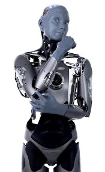

Social humanoid · United Kingdom · Leader · #4 R-Score rank
Ameca Robot Profile
Human-robot interaction, events, research
Robot Snapshot
Core commercial and technical signals for Ameca.
Commercial Access
Purchase path, regional access, and import readiness.
Türkiye Market Access
Local sales path, distributor status, import readiness, and partner pipeline.
Ameca facts
- Company
- Engineered Arts →
- Status
- Commercial / demo platform
- Use case
- Human-robot interaction, events, research
- Height
- Human scale
- Runtime
- Not disclosed
- Official source
- Open official source →
Robologai view
Ameca is tracked as a Social humanoid robot for Human-robot interaction, events, research. Robologai scores it by maturity, deployment signal, price clarity, media proof, and official source strength.
91/100 Leader
Maturity 5/5
Price clarity 2/5
Commercial 88
Mobility 100
AI signal 100
Leader
Readiness Breakdown
How Robologai scores Ameca across market-readiness signals.
Data Quality
Source confidence, pricing clarity, and deployment proof.
Source Notes
Ameca source trail.
Deployment Context
What Ameca signals about the physical AI market.
Compare Next